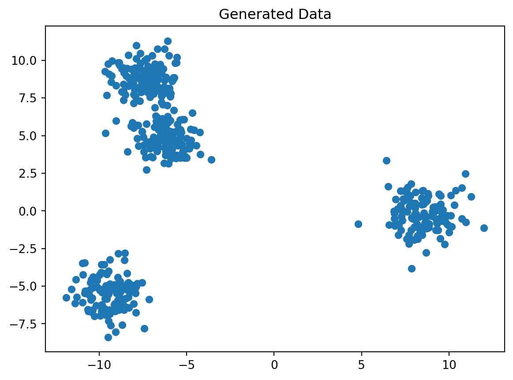
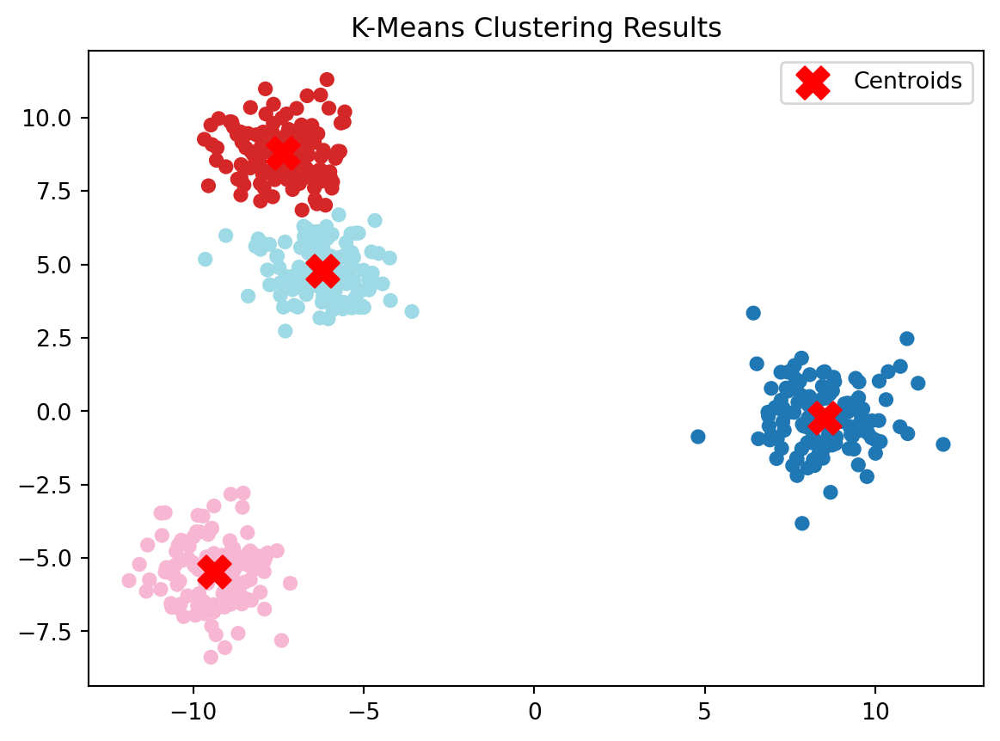
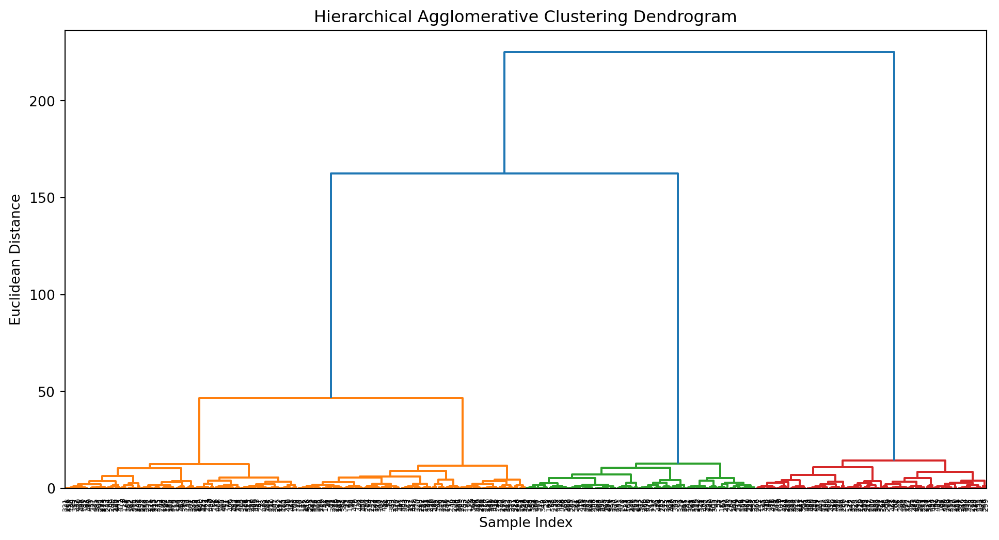
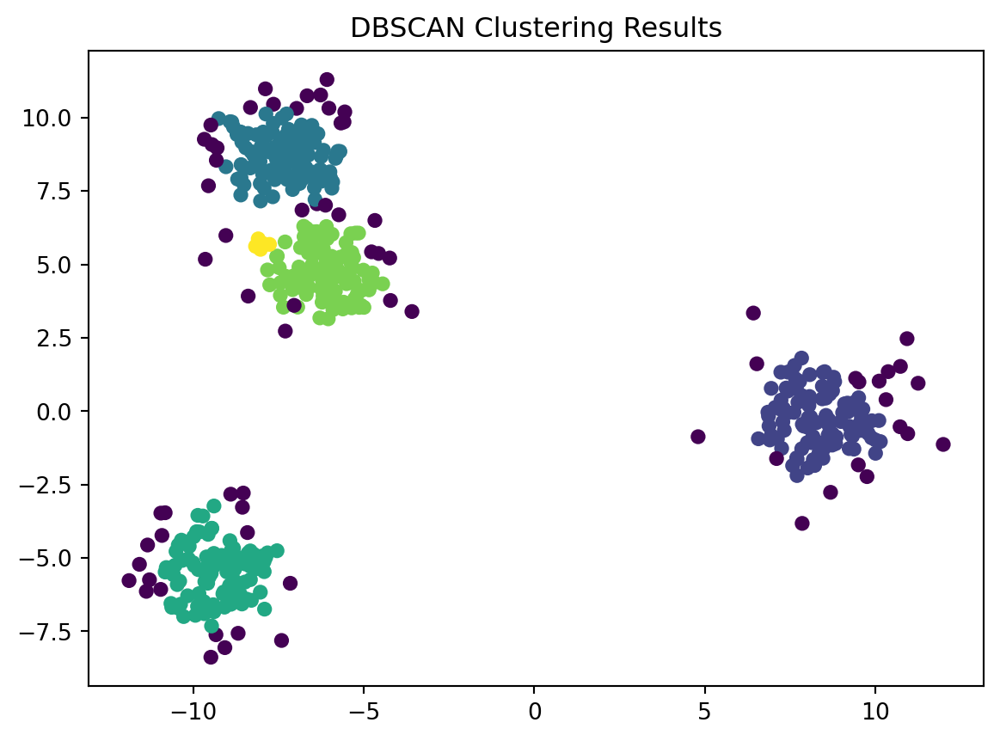

# Import necessary libraries
import numpy as np
import matplotlib.pyplot as plt
from sklearn.cluster import KMeans
from scipy.cluster.hierarchy import dendrogram, linkage
from sklearn.cluster import DBSCAN
from sklearn.datasets import make_blobs
# Generate synthetic data
data, _ = make_blobs(n_samples=500, centers=4, random_state=5571)Introduction:
In the vast landscape of machine learning, clustering stands out as a powerful technique that allows us to discover inherent patterns and structures within data. Whether it’s grouping similar documents, identifying customer segments, or understanding genetic relationships, clustering plays a pivotal role in uncovering hidden insights. This blog will unravel the complexities of clustering in machine learning, exploring its principles, algorithms, and real-world applications.
Understanding Clustering:
Clustering is a form of unsupervised learning where the algorithm aims to group similar data points together based on certain features, without explicit guidance or labeled examples. The objective is to reveal the underlying structure within the data, making it a valuable tool for exploratory data analysis.

Key Concepts:
- Similarity Measures:
- Clustering relies on defining a notion of similarity or dissimilarity between data points. Common metrics include Euclidean distance, cosine similarity, and Jaccard index.
- Centroid-Based Clustering:
- Algorithms like K-means involve iteratively updating cluster centroids until convergence. Data points are assigned to the cluster whose centroid is closest.
- Hierarchical Clustering:
- This approach builds a hierarchy of clusters, creating a tree-like structure known as a dendrogram. It can be agglomerative (bottom-up) or divisive (top-down).
- Density-Based Clustering:
- Density-based algorithms like DBSCAN group data points based on their density in the feature space, identifying dense regions as clusters.
We’ll be focusing specifically on K-Means Clustering and Hierarchical Agglomerative Clustering in this article as to not overburden you with too much information.
To Get Started
Before jumping right into clusters, lets import some important packages and load the dataset we’ll be using. We’ll be generated a synthetic dataset to make it easier for you to follow along to learn and try on your own without having to worry about finding the dataset. Hence also why we’ll be using random_state=5571.
Now let’s generate a graph for this dataset to get an idea of how the data is spread.
# Visualize the generated data
plt.scatter(data[:, 0], data[:, 1], s=30)
plt.title('Generated Data')
plt.show()
Types of Clustering Algorithms:
K-means Clustering:
- Widely used for its simplicity and efficiency, the iterative nature of the k-means algorithm involves an initial phase where k centers are assigned. In the subsequent step, each data point is assigned to the cluster whose center is closest. In the next iteration, the centers are adjusted based on the data points within each cluster, recalculating centroids using the average values for each feature. This process continues until the centers converge.
We start by providing the value of k, i.e., the number of centers we want to assign, in order to initialize the K-Means algorithm and fit it into the generated data.
# Apply K-Means with K=4 kmeans = KMeans(n_clusters=4, random_state=123) kmeans.fit(data)/Users/anant/anaconda3/lib/python3.11/site-packages/sklearn/cluster/_kmeans.py:1412: FutureWarning: The default value of `n_init` will change from 10 to 'auto' in 1.4. Set the value of `n_init` explicitly to suppress the warningKMeans(n_clusters=4, random_state=123)
In a Jupyter environment, please rerun this cell to show the HTML representation or trust the notebook.
On GitHub, the HTML representation is unable to render, please try loading this page with nbviewer.org.KMeans(n_clusters=4, random_state=123)
Now we can just get the cluster centroids and labels to go ahead and visualize them!.
# Get cluster centroids and labels centroids = kmeans.cluster_centers_ labels = kmeans.labels_ plt.scatter(data[:, 0], data[:, 1], c=labels, s=30, cmap='tab20') plt.scatter(centroids[:, 0], centroids[:, 1], marker='X', s=200, color='red', label='Centroids') plt.title('K-Means Clustering Results') plt.legend() plt.show()
As you can see this algorithm is easy to implement using libraries like scikit-learn, making it a valuable tool for various data analysis tasks! Go ahead and experiment with different values of K and try it with real-world datasets to enhance your understanding of K-Means and its applications
Hierarchical Agglomerative Clustering:
- Hierarchical Agglomerative Clustering (HAC) is a versatile and intuitive method in unsupervised learning that builds a hierarchy of clusters. It builds a tree of clusters, allowing the exploration of both small and large-scale structures within the data. Unlike K-Means, HAC doesn’t require specifying the number of clusters beforehand. Now lets try it on the same synthetic dataset used for K-Means clustering.
We’ll be using Ward’s method for linkage (Will discuss this in further articles)
# Apply Hierarchical Agglomerative Clustering linked = linkage(data, 'ward')Now lets provide plot the Dendrogram!
# Plot the dendrogram plt.figure(figsize=(12, 6)) dendrogram(linked, orientation='top', distance_sort='descending', show_leaf_counts=True) plt.title('Hierarchical Agglomerative Clustering Dendrogram') plt.xlabel('Sample Index') plt.ylabel('Euclidean Distance') plt.show()
HAC allows for a more nuanced understanding of relationships between data points. The dendrogram visually captures the merging process, making it easier to interpret the hierarchy of clusters.
DBSCAN (Density-Based Spatial Clustering of Applications with Noise):
- Density-Based Spatial Clustering of Applications with Noise (DBSCAN) is a powerful clustering algorithm that identifies dense regions in a dataset and is capable of discovering clusters of arbitrary shapes. Excellent for identifying clusters of arbitrary shapes and handling noise, DBSCAN groups together data points based on their density. Lets explore the fundamentals of DBSCAN and demonstrate its application on the same synthetic dataset used for K-Means and Hierarchical Agglomerative Clustering.
# Apply DBSCAN dbscan = DBSCAN(eps=0.5, min_samples=5) # Adjust parameters based on dataset characteristics labels = dbscan.fit_predict(data) # Visualize DBSCAN Clustering plt.scatter(data[:, 0], data[:, 1], c=labels, s=30, cmap='viridis') plt.title('DBSCAN Clustering Results') plt.show()
Real-World Applications:
1. Customer Segmentation:
- Clustering helps businesses identify distinct groups of customers with similar purchasing behavior, enabling targeted marketing strategies.
2. Image Segmentation:
- In computer vision, clustering is used to segment images into regions with similar characteristics, aiding in object recognition and scene understanding.
3. Anomaly Detection:
- Clustering can be applied to detect unusual patterns or outliers in data, which is crucial for fraud detection and system monitoring.
4. Document Classification:
- Text clustering is employed to group similar documents together, facilitating tasks such as topic modeling and document organization.
Challenges and Considerations:
- Choosing the Right Number of Clusters (K):
- Determining the optimal number of clusters can be challenging and often requires domain knowledge or additional techniques.
- Sensitivity to Initial Conditions:
- Some algorithms, like K-means, are sensitive to initial cluster centroids, which may result in different outcomes for different initializations.
- Scalability:
- The efficiency of clustering algorithms may be impacted by the size of the dataset and the dimensionality of the feature space.
Conclusion:
In the tapestry of machine learning, clustering emerges as a versatile and indispensable tool for discovering patterns and uncovering hidden structures within data. As we continue to navigate the complexities of the digital age, the application of clustering algorithms will undoubtedly play a central role in transforming raw data into actionable insights, enhancing decision-making processes across various domains.